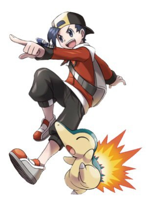
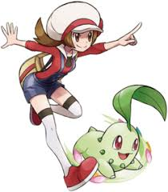

Lance é o grande Campeão da Liga Pokémon das regiões de Kanto e Johto, tendo conquistado o título durante os três anos entre os eventos da 1ª e 2ª Gerações e seus respectivos remakes.
Anteriormente, era um membro da Elite Four das mesmas regiões, ascendendo ao posto em algum momento antes dos eventos da 1ª Geração e seus remakes. É um especialista em Pokémon do tipo (Dragão).

O time de Lance é composto por uma variedade de Pokémon, incluindo alguns dos mais poderosos da segunda geração. Seu time é conhecido por sua força e versatilidade, tornando Lance um adversário formidável na Liga Pokémon.

Ethan é o protagonista masculino dos jogos Pokémon da Geração II. Ele é um treinador de Pokémon determinado e corajoso, conhecido por sua habilidade e inteligência. Ethan embarca em uma jornada pela região de Johto, enfrentando desafios, capturando Pokémon e batalhando contra líderes de ginásio para se tornar o Campeão da Liga Pokémon. Sua história destaca a importância da amizade, perseverança e crescimento pessoal ao longo da aventura.

Esse time do Ethan é composto por alguns dos Pokémon mais poderosos e icônicos da segunda geração, incluindo Typhlosion e Gyarados shiny. Esse time é conhecido por sua força e versatilidade, tornando Ethan um adversário formidável na Liga Pokémon.
Leaf é a protagonista feminina dos jogos Pokémon da Geração I. Ela é uma treinadora de Pokémon determinada e corajosa, conhecida por sua inteligência e habilidades estratégicas.

Esses dois são os únicos pokémon que ela mostrou ter.